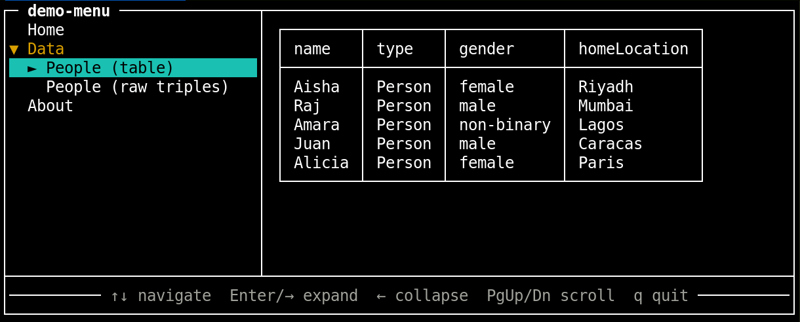

ui: vocabulary.The following command in a terminal :
$ node sol-menu-cli.js data/demo-menu.ttl#MainMenuProduces this interactive menu

This is the full HTML to load the live demo
<script src="sol-menu.js" type="module"></script>
<sol-menu from-rdf="data/demo-menu.ttl#MainMenu"></sol-menu>The sol-menu web component can be used with a single from-rdf attribute. The value is a URI with a fragment identifier (e.g. menu.ttl#MainMenu) pointing to the root ui:Menu subject.
The selected menu item can be shown in an inline panel or if the RDF menu definition specifies a ui:displayTarget, it will be shown there instead.
ui:Menu
ui:label # (required) display name
ui:parts # (required) ordered rdf:Collection of ui:Link, ui:Component, and/or ui:Menu items
ui:orientation # (optional) "horizontal" (default) or "vertical"
ui:linkTarget # (optional) CSS selector; content renders there instead of the built-in panel
ui:Link
ui:label # (required) display name
ui:href # (optional) URL to load (via handler component or default sol-include)
ui:contents # (optional) literal HTML rendered inline directly
ui:handler # (optional) a ui:Component used to render the href
ui:icon # (optional) icon URL
note: a ui:Link must have either a ui:href or a ui:contents triple.
ui:Component
ui:label # (required) display name shown in the menu
ui:name # (required) custom element tag, e.g. "sol-query"
ui:attribute # (optional) schema:PropertyValue pairs passed as element attributes
# e.g. [ schema:name "sparql" ; schema:value "SELECT ..." ]
ui:icon # (optional) icon URL
note: a ui:Component is self-contained — it carries its own tag and attributes.
The consuming application must load or define the named custom element.